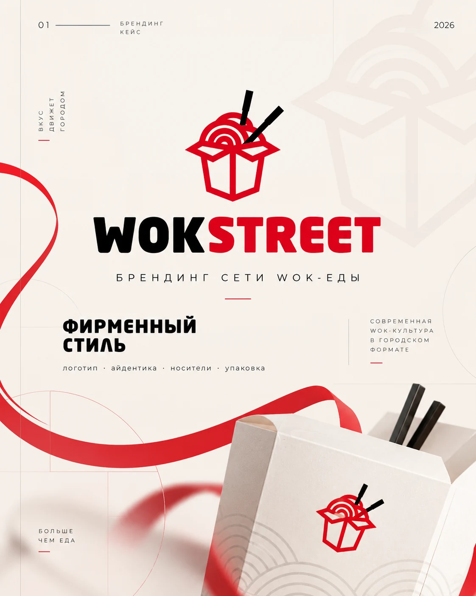
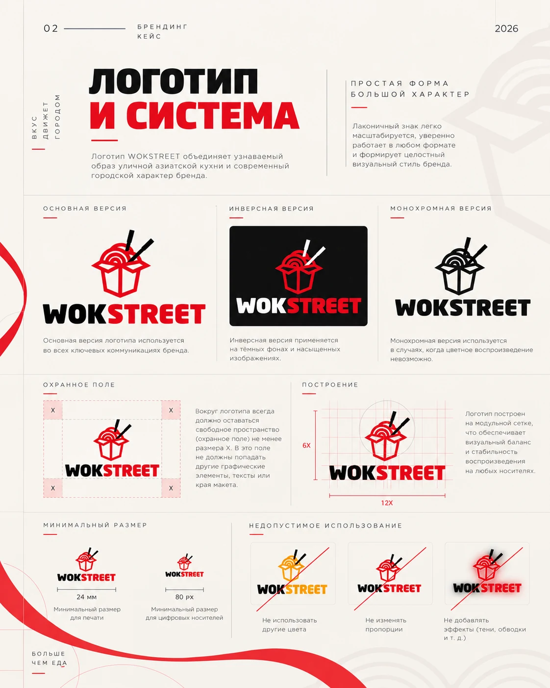
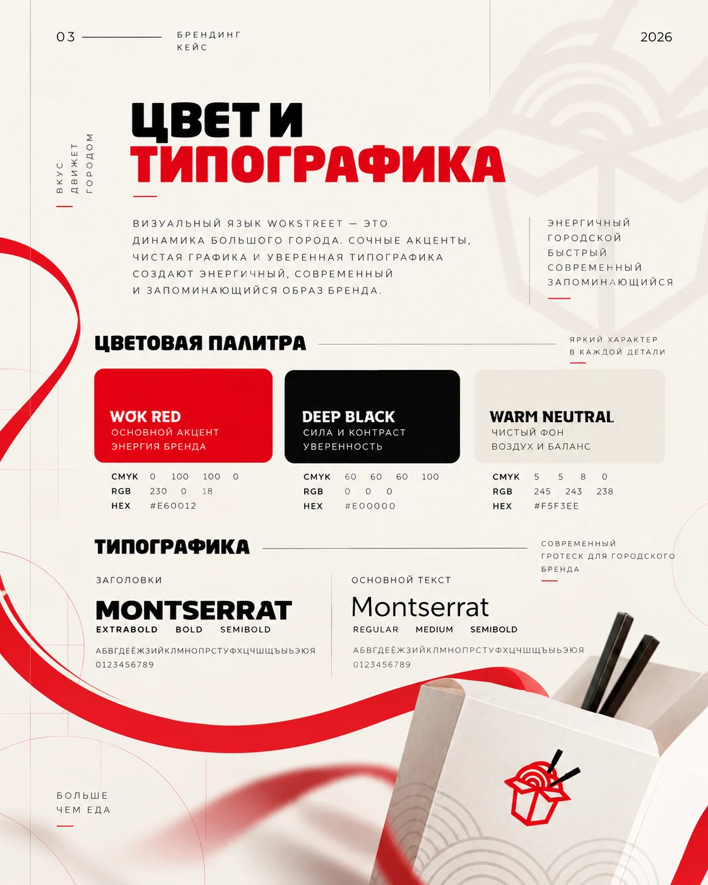
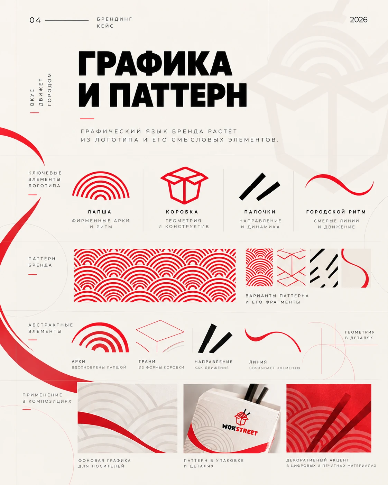
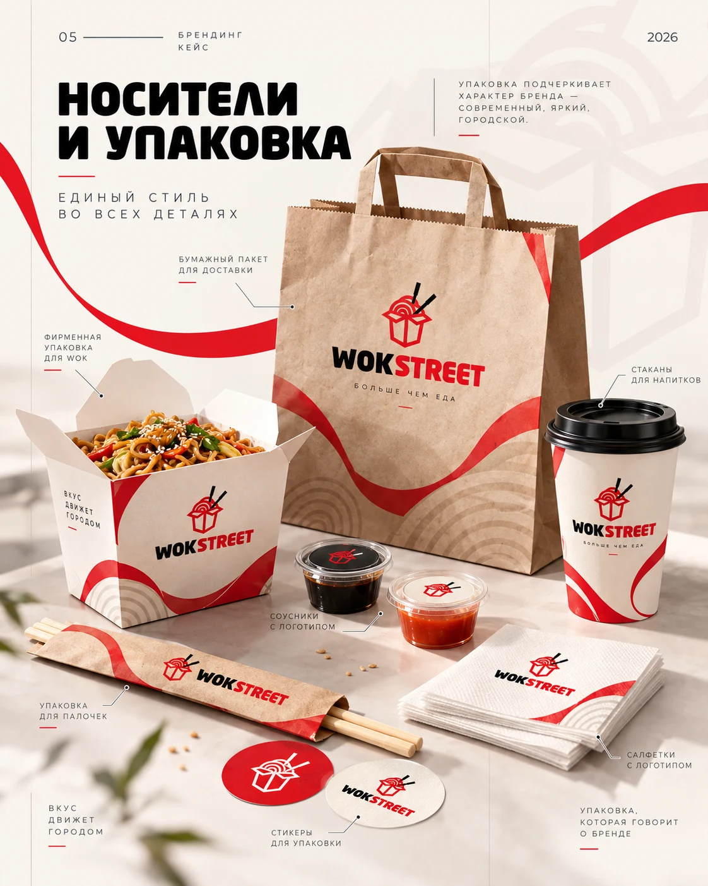
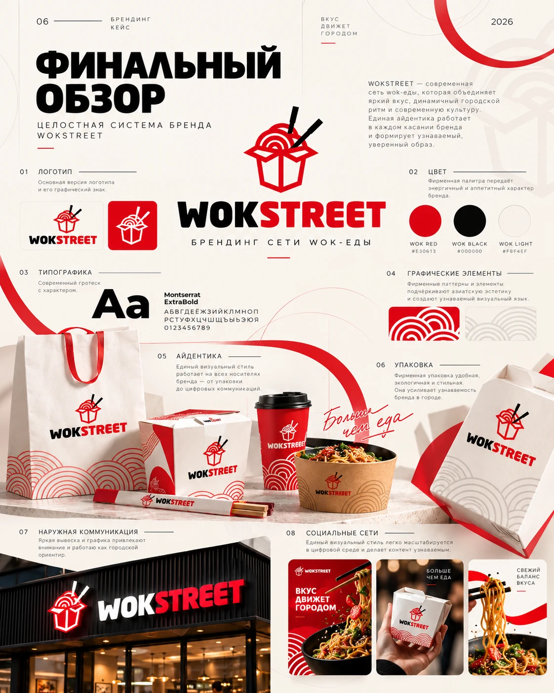

ЛОГОТИПЫ / ФИРМЕННЫЙ СТИЛЬ
WOK Street
Логотип и фирменный стиль WOK Street: цвет, типографика, паттерн, упаковка и носители.






ЛОГОТИПЫ / ФИРМЕННЫЙ СТИЛЬ
Логотип и фирменный стиль WOK Street: цвет, типографика, паттерн, упаковка и носители.





